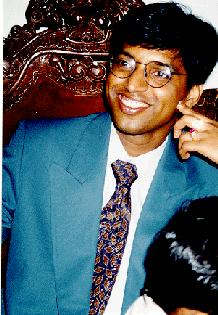

WEEKEND THOUGHTS # 12

Before I begin -
Just after I posted the last weekend's article, I received a mail from
Prakash asking me "Can I write something for next weekend !" That was
something different from all the previous weekends. I wrote to him "You
are always welcome; this is everyone's column; one of us introduces
him/herself and all of us get to know him/her." Everytime, I added a
line at the bottom, requesting an article. But, starting with Prakash,
I don't need to do that anymore!
Back to introduction -
Many of us are acquainted with Prakash Muduli from New York, New York.
I had the privilege to know him personally from our good old IIT days.
For him, life is a sports. He takes everything in a stride. Whether it
is participating for RK Hall or representing Cricket Team of Columbia
University or Ballroom dancing. He'll inspire the people around him to
take up any challenge and achieve their goal; just like him. If he has
to do it, he'll do it. And if he has to say it, he'll say it.
So, let's listen to him ... (Surjit Sahoo, 05/05/95)
***********************************************************************
Self Introduction -
Prakash Kumar Muduli
Went to school and college in Berhampur. B.Tech at IIT-Kharagpur and
M.S-Ph.D (now candidate) at Columbia University, New York City.
***********************************************************************
And here's what I think ...
===========================
Oh ! not again . Not a single gold medal in Olympic for India !
There is not much time left for this to be a reality in next
summer Olympic at Atlanta. "We have P.T.Usha to save us ! ".
Oh yah ! Leave that poor lady alone, it is too much pressure for
her to handle the expectation of 850 m people. Even if having
not-so-good-physic she managed to win so many medals in so many
track events by sheer dedication and practice. It will not be really
hard to do the same for so many "Makhan Singhs' " of India. It will
be silly to blame government for not providing facilities for this
kind of sports. If other African countries/Mexico can produce
good runners, why not India ? Clearly, I am not talking about the
sports such as Gymnastics or ice-skating where we need proper
facilities and good coach. There are so many other sports which
require very little facility and one can excel in those sports.
Then why have not we excelled in any sports yet ? The answer : We are
lazy and lack self-motivation. Well, you may say, we don't have
the culture which encourages sports. No, I don't think so!. I have
seen very few Indians, both here and in India, who don't watch sports
on TV or dislike any sports in general. When Brazil won the final in
the last World Cup soccer, the price of fish sky-rocketed in Calcutta
as people started celebrating ! I don't understand how one can
celebrate when some other country wins and we get beaten by small
countries like Nepal or South Korea and don't even qualify for
entrance to World Cup soccer! The same crowd don't mind wooing or
throwing rotten tomatoes at Indian cricket players if they played
badly! So you see, how sports-crazy we are ! And about the "desis"
here, most of them are glued to TV watching Jordan dunking basketball
( even in India now !) and analyze games proudly to predict which team
is going to win in the final.
It is true with other sports too.We love to watch other people play
and we relax enjoying the game. All these hours of investment of
precious time don't seem to inspire us just to participate in any
sports. May be we watch all the sports just to kill easy time. If
this is the case we should be happy for not winning any medal -
no-pain-no-gain policy and who cares about the prestige of nation? Again,
you may say money and politics play major role in sports.
Yes, it does, but this is not the only reason for us not to be
successful. We can argue a lot on this point. But allow me to say
this: except US, Japan and few rich European nations, while other
nations having similar or lower economic power /political situation
compared to India have achieved relatively fair amount of success in
the international sports, we have not!
Look at the size and population of our country and not even a single
gold medal ? Although companies like TATA, Birla, Railways, BSF, Food
Corporation of India Ltd. etc. have tremendously supported sports-
persons financially, yet unfortunately India has not produced a single
sports(wo)man of international standard! There has to be something
fundamentally wrong! Don't give that crap! We don't eat beef !! Leave
that sacred cow alone; eat chicken, goat meat, pork, fish or steroid:-)
I think, one of the major problems is that very few people participate
in any kind of sports. Of course, just participating does not mean
that one is going to win medal. Otherwise it will be like saying that
whoever studies Physics will become Einstein ! Some people have
certain inherent ability to excel naturally in certain things. Hey,
you never know, you may be a better musician/writer/sportsperson than
a computer programmer! Your talent is probably under-utilized. Unless
you try something which you like, you will never realize what your
potentials are. I am again convinced by personal observation that I
never thought I could dance so well before I started learning it !
If lot of people try with right motivation then some of them will
succeed and we have lot of people to try on verities of things.
Every one need not aspire to become a doctor or engineer. Persons who
show interest to choose sports as a major career should be respected
and encouraged.
As per the request, this is my little contribution for the "weekend
thought". I wish I could write something directly related to Orissa
but could not think of any new issue.
Have a nice weekend. If you have not seen "The Forest Gump" and
"The Shawshank Redemption" yet, don't miss these two great movies!
If you haven't seen 'Pulp Fiction' yet, then don't worry. you have
not missed anything.
Thanks.
Prakash K. Muduli
=================
And here are some postviews -
By: Brajendra Panda
-----------------------
The author has presented a disheartening reality about the
prospect of the sports men and women in India (definitely true for
Orissa). They are neglected, discouraged, and subordinated. They are
neither well rewarded nor do they get what they deserve. Rather, most
of them are looked down upon. I know that I should be more careful
while making a statement like this. Well, I am not talking about games
like cricket where players are much appreciated. In any other games or
sports, an average player gets no respect in the society. For example,
our village has produced two professional volleyball players, one
works for AG and the other works for TISCO. I have never seen any one
from our village bragging about them in public, or celebrating their
victories (which is a very common practice in this country). As it is
always inferred that a brahmin must be poor, one need not say he is a
"Daridra Brahman" (well, at least they used to be and most of them are
still), similarly, a sports man or sports woman back home is presumed
to be a not so well-to-do person. (Look at the NBA, NFL, MLB, ...
players in this country.) Thus they gain no prevalence.
As a reviewer, I could not find any point of disagreement with the
author. Rather, I like to add, if I may, that there should be extra
adequate effort from our government to motivate the players by
providing the required opportunity, environment, financial assistance,
and appropriate reward as most of the other countries do. Probably,
we would care for them more if they would be richer.
The author has presented a thought provocative topic while adding a bit
of humor here and there to make not-so-serious readers a little more
interested. Enjoy.
By: Debasmita Misra
-----------------------
Prakash: That was one excellent piece of argument I have read in so
many days. You have very nicely portrayed the sports culture of India.
Made me think for a long time (what's wrong with us?). There were
those days of Gavaskar, Bedi, Milkha Singh, Dara Singh, Solkar and
these are the days now. Something is definitely wrong somewhere. I
remember, being proud about hockey and cricket. India was at the top
in at least these two games. The Olympic: Look at wrestling-- we had
bagged so many elegant medals in the past. There are other games where
we had excelled not very long ago. I myself loved to play basketball
and volleyball. And by street standards I was scoring well in these
games. I remember Sanat Mishra (who was perhaps 2 years or so senior
to us) who did a great job in badminton. What about billiards -- India
has always excelled in amateur tournaments (I think professional too a
couple of times). Talk about basket ball -- I distinctly remember some
Mr. Panda (of Bihar) who was emerging as a forefronter. Talk about
lawn tennis -- The Amritraj brothers had earned the names for India.
I felt sad but not desolate after reading your article. We still have
people like you who at least think in these terms. May be we have been
taught from our childhood that : Participation is the most important
thing in sports and not winning. That pseudo-philosophy should be
changed. The TV-culture that is growing in India should be used to
inculcate some winning/killer spirit among our upcoming generation.
---------------------
More next weekend ...
Surjit Sahoo
--
Your comments are always welcome...

 Prakash K. Muduli
Prakash K. Muduli

![[IMAGE]](mult.gif)
![[IMAGE]](jag.gif)
Ride back to Home Page...
![[IMAGE]](rath.gif)